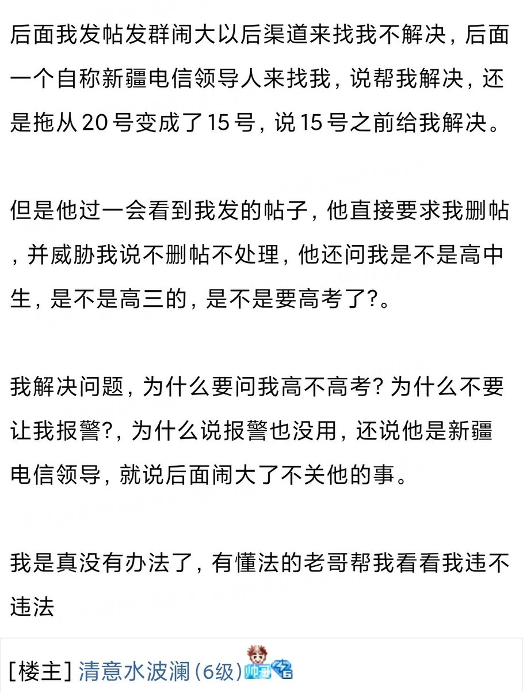
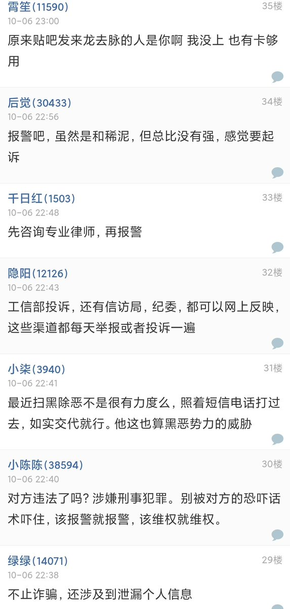

奶昔🥤
@realNyarime
更新一下后续


奶昔🥤
@realNyarime
很多国内号卡套餐我都是看到发，但不提供渠道，因为今年8月开始运营商就停止第三方渠道的办理业务，剩下的只有那些校园卡、线下办理和过户渠道
新疆19元530G流量800分钟通话这个卡翻车原因很简单，就是新疆电信校园厅营业人员利用开卡，身份证正反面视频开卡后，违规注销电信卡并不退款，导致中介背锅 https://t.co/2HV0QX0QRP https://t.co/hit8AbcG3w